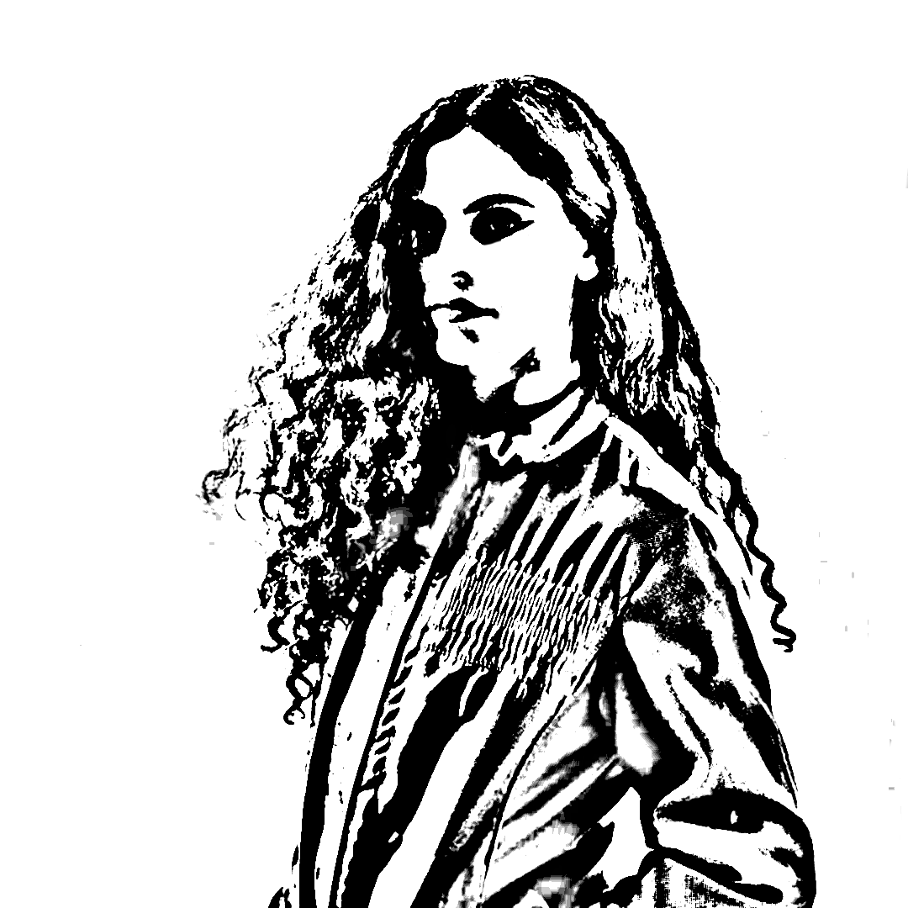

NORA MINC nace en 2020, gracias al apoyo de Plataforma LODO y Pro Helvetia, con la creación de una pieza musical telemática interpretada en vivo, titulada Cajita Musical Planetaria.
El ensamble investiga el contexto socio-tecnológico en la búsqueda de nuevos soportes y metodologías para que las personas puedan crear colaborativamente aún estando en distintos lugares del planeta.

Emma Harumi

Nacho Sanchez

Rosario Murua

Felipe Arias
Emiliano Montenegro
Bárbara Togander

Santiago Ocampo
Cajita Musical Planetaria
5 de septiembre de 2020
Festival IN/OUT
Coincidencias